Chapter Overview
This chapter presents Sikhism as a living religious tradition shaped by one God, equality, scripture, worship, visible identity, community, and selfless service. The chapter connects Sikh ideas to the ways believers gather, serve, remember the Gurus, and live faithfully in public life.
The goal is to understand how the chapter's major themes connect. Sikhism is best studied as a lived tradition where Ik Onkar, Guru Nanak, the Guru Granth Sahib, langar, seva, the Khalsa, the Five Ks, and Canadian Sikh communities all reinforce one another.
Learning Outcomes
- Explain how Sikhism joins devotion to one God with equality, honest living, worship, and service.
- Describe Guru Nanak, Ik Onkar, and the rejection of caste superiority using accurate Sikh vocabulary.
- Explain why the Guru Granth Sahib is treated as sacred scripture and the living Guru in Sikh tradition.
- Describe how the gurdwara, kirtan, sangat, langar, and seva connect worship to community life.
- Explain the Khalsa, Amrit Sanskar, and the Five Ks as visible expressions of Sikh discipline and commitment.
- Connect Sikh teachings about equality to langar, service, justice, and public identity.
- Describe Sikh identity in Canada in terms of pluralism, service, accommodation, and civic participation.
- Use reliable sources to research a Sikh symbol, practice, community, event, or institution and produce a basic bibliography.
Chapter Sections
- Sikhism: Faith, Identity, and Selfless Service
- Guru Nanak and the Foundation of Sikhism
- Ik Onkar and One Divine Source
- The Guru Granth Sahib as Scripture and Living Guru
- The Gurdwara as Worship, Learning, and Community
- Seva: Selfless Service as Lived Faith
- Langar and Equality Through the Shared Meal
- Radical Equality as the Logic of Sikh Theology
- The Khalsa and Amrit Sanskar
- The Five Ks and Visible Commitment
- Kirtan and Shared Worship
- Vaisakhi: Harvest, History, and Identity
- Sikh Identity and Canadian Religious Pluralism
- Outward Signs and Inward Commitments
- Researching Sikhism Respectfully
- Chapter 9 Glossary
Chapter 9 Core Ideas
| Idea | Meaning |
|---|---|
| One God | Sikhism begins with Ik Onkar, the belief that all life comes from one divine source. |
| Equality | Sikh theology rejects caste superiority and insists that all people share dignity before God. |
| Living scripture | The Guru Granth Sahib guides Sikh worship and community life as sacred scripture and living Guru. |
| Community worship | The gurdwara, kirtan, and sangat connect prayer, teaching, and communal belonging. |
| Service | Seva and langar show that devotion to God must become hospitality, justice, and care for others. |
| Visible commitment | The Khalsa and Five Ks make Sikh discipline, courage, and identity publicly visible. |
| Canada and pluralism | Sikh communities contribute to Canadian public life through worship, service, and civic participation. |
| Respectful research | Strong study focuses on meaning, context, and accurate interpretation rather than stereotype or appearance alone. |
Chapter 9 Knowledge Map
| Area | What it includes |
|---|---|
| Foundation | Guru Nanak, Ik Onkar, one God, equality, honest work, sharing, and rejection of caste superiority. |
| Sacred authority | The Guru Granth Sahib as sacred scripture and living Guru. |
| Worship and community | Gurdwara, kirtan, sangat, langar, teaching, and shared worship. |
| Lived ethics | Seva, humility, hospitality, justice, and service to others. |
| Identity and discipline | Khalsa, Amrit Sanskar, Five Ks, courage, commitment, and visible faith identity. |
| Canada and pluralism | Gurdwaras, service projects, visible identity, religious accommodation, and civic contribution. |
1. Sikhism: Faith, Identity, and Selfless Service
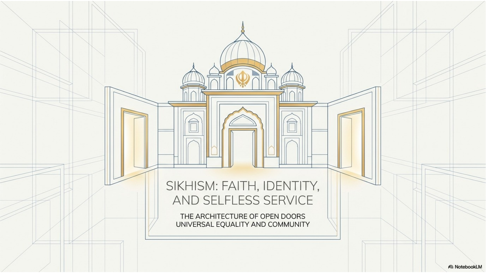
Sikhism, also called Sikhi by many followers, is a monotheistic religious tradition that began in the Punjab region of South Asia. It is centred on devotion to one God, remembrance of the divine, honest living, equality among human beings, and service to others. It is not only a private belief system. It is a way of living faith through worship, community responsibility, moral discipline, and public identity.
The chapter theme of faith, identity, and selfless service matters because Sikhism does not separate spiritual belief from social action. A Sikh is called to remember God, work honestly, share with others, reject unjust social divisions, and serve the wider community. These values show up in the gurdwara, in langar, in seva, in the Khalsa, in the Five Ks, and in Sikh contributions to Canadian society.
A respectful study of Sikhism needs to move beyond outward appearances. Turbans, uncut hair, kirpans, gurdwaras, and public service projects are visible, but they point to deeper commitments: equality before God, humility, discipline, courage, community, and justice.
2. Guru Nanak and the Foundation of Sikhism
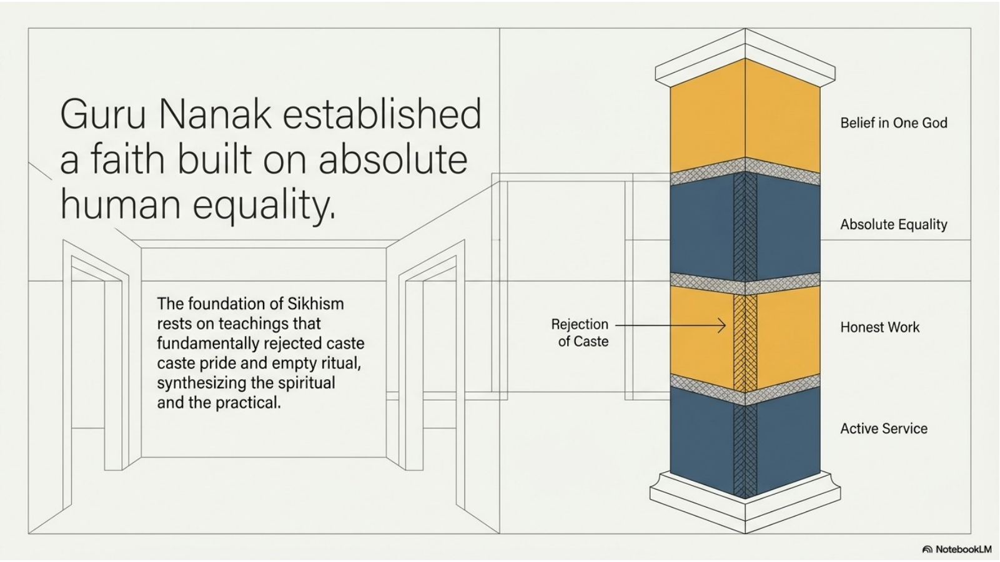
Guru Nanak is understood as the founder of Sikhism. He lived in the Punjab region during a period when religious identity, caste divisions, political power, and social inequality strongly shaped daily life. His teaching challenged the idea that spiritual worth could be measured by caste, birth, gender, wealth, or external status.
Guru Nanak taught that God is one and that all human beings stand before the same divine reality. This made equality a spiritual principle, not just a social preference. If all people belong to one divine source, then no caste or class can claim sacred superiority over another. This is why Sikh teaching has a strong concern for justice, humility, shared food, and public service.
Several core patterns are associated with Guru Nanak’s message: remembering God, earning by honest work, sharing with others, and serving people in need. These ideas later became visible in Sikh institutions such as the gurdwara and langar, where worship and practical equality are joined together.
3. Ik Onkar and One Divine Source
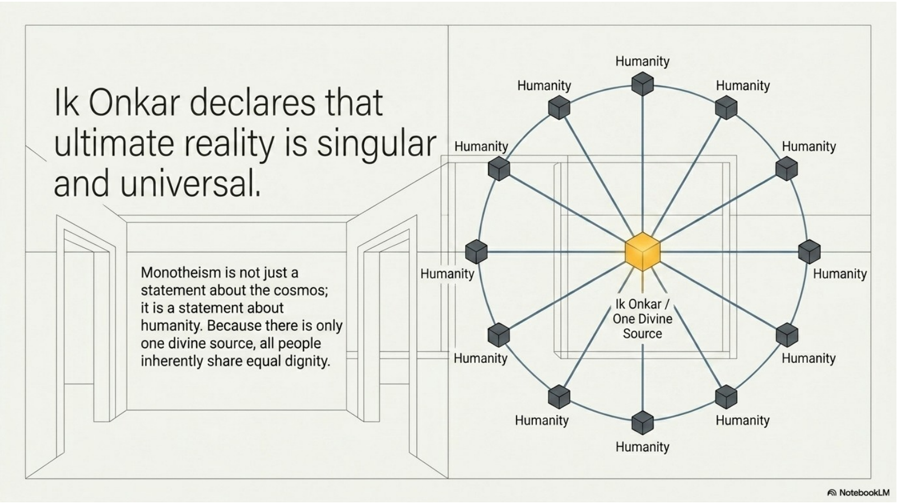
Ik Onkar is one of the most important expressions of Sikh belief. It is often translated as “There is One God” or “There is One Divine Reality.” It appears at the beginning of the Mul Mantar and communicates that reality is rooted in one divine source rather than many competing gods or divided spiritual powers.
The meaning of Ik Onkar is not only theological. It also carries ethical weight. If there is one divine reality behind all life, then human beings cannot be ranked as spiritually superior or inferior by caste, gender, wealth, religion, ethnicity, or social power. The belief in one God supports the Sikh rejection of oppressive hierarchy.
This is why Sikhism connects monotheism with equality. Belief in one God is expected to reshape how people treat one another. Worship, service, langar, and community life all become ways of acting out the truth that all people share dignity before God.
4. The Guru Granth Sahib as Scripture and Living Guru
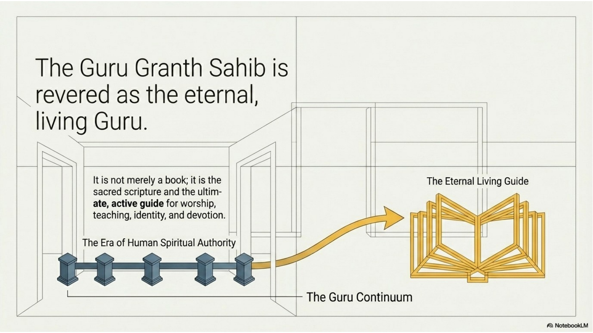
The Guru Granth Sahib is the central sacred scripture of Sikhism. It contains hymns, prayers, and teachings that guide Sikh belief, worship, and daily life. It is not treated as an ordinary book. In Sikh tradition, it is revered as the living Guru because it carries the spiritual authority that guides the community after the line of human Gurus.
This reverence shapes worship. In a gurdwara, the Guru Granth Sahib is placed in a position of honour, read aloud, sung through kirtan, and approached with respect. Bowing before the scripture is not worship of paper or an object. It is an act of humility before divine wisdom and the teaching of the Guru.
The Guru Granth Sahib also reinforces the Sikh idea that spiritual wisdom is meant to be heard, sung, reflected on, and lived. Its teachings are not locked away for specialists only. They guide the sangat, the gathered community, through worship, teaching, service, and ethical life.
5. The Gurdwara as Worship, Learning, and Community
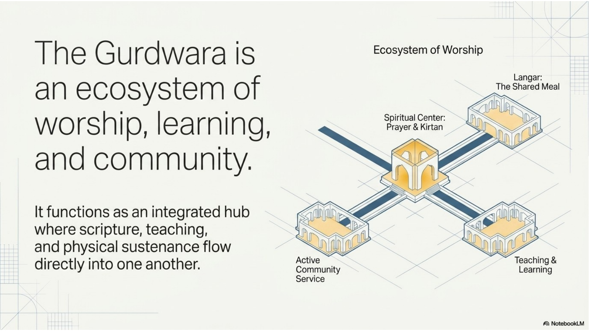
A gurdwara is the Sikh place of worship. The word can be understood as a “doorway to the Guru.” It is where the community gathers to hear the Guru Granth Sahib, participate in kirtan, pray, learn, share meals, and organize service. It is both a sacred space and a practical community hub.
The gurdwara brings together several parts of Sikh life. Worship centres on the Guru Granth Sahib. Teaching helps people understand Sikh values and history. Kirtan turns scripture into shared devotional singing. Langar feeds people and demonstrates equality. Service projects connect faith to the needs of the wider community.
Because the gurdwara is open to everyone, it also becomes a public expression of Sikh hospitality. A visitor does not need to be Sikh to enter respectfully, listen, or share in langar. This openness reflects the Sikh belief that human dignity is not limited to members of one group.
6. Seva: Selfless Service as Lived Faith
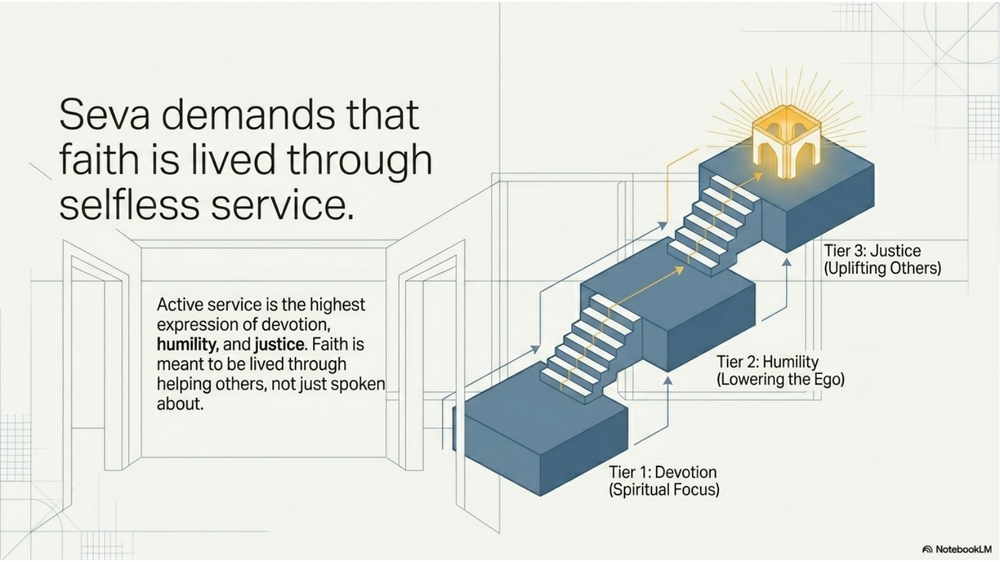
Seva is selfless service. It means helping others without acting from ego, superiority, or the desire for praise. In Sikhism, service is not an optional extra added to religion after worship. It is one of the clearest ways faith becomes real in daily life.
Seva expresses humility because the person serving is not supposed to treat themselves as better than the person receiving help. It also expresses justice because service responds to real human needs. Feeding others, volunteering, helping the vulnerable, supporting community projects, and working for the common good are all ways Sikh values can become visible.
The deepest point is that devotion to God should change how a person treats people. A Sikh cannot claim spiritual seriousness while ignoring human suffering or social division. Seva pushes faith outward into the world.
7. Langar and Equality Through the Shared Meal
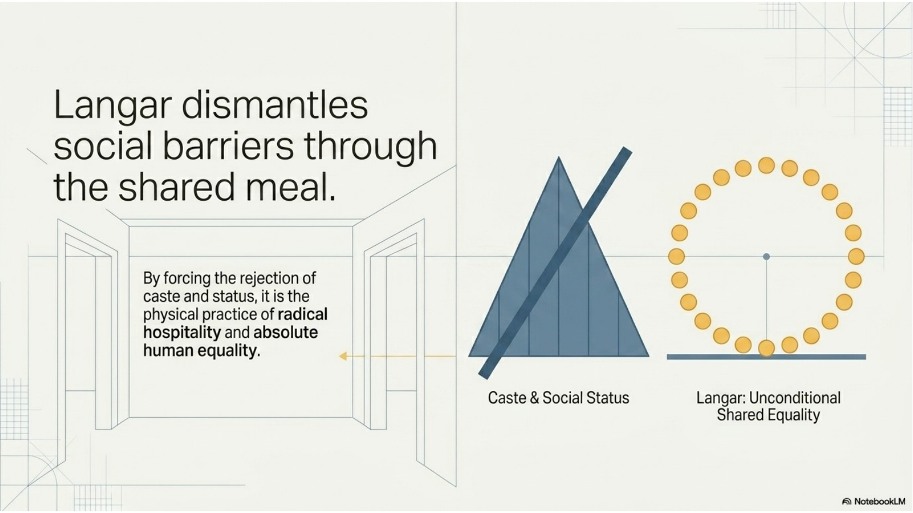
Langar is the free community meal served in gurdwaras and Sikh community settings. Everyone is welcome regardless of religion, caste, gender, wealth, ethnicity, or social status. The meal is not only charity. It is a religious practice that makes equality visible.
Historically, langar directly challenged caste divisions because people who might normally be separated by status sat together and ate the same food. The practice teaches that no person is too high to serve and no person is too low to be served. Preparing, serving, and cleaning up after langar are also forms of seva.
Langar shows how Sikhism joins theology and daily life. Belief in one God leads to the belief that people share dignity. That belief becomes action when people cook, serve, sit, and eat together without status barriers.
8. Radical Equality as the Logic of Sikh Theology
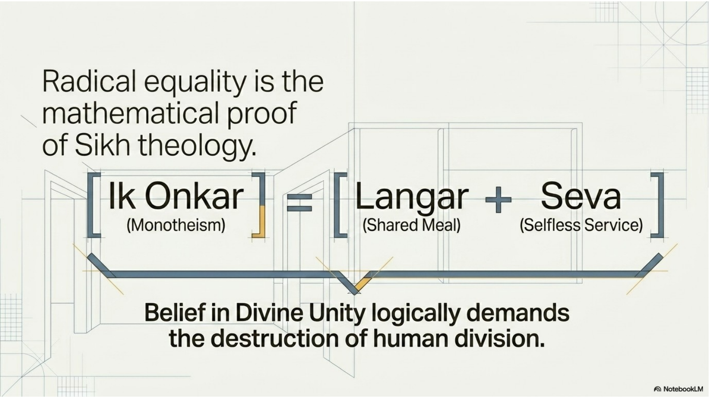
The connection between Ik Onkar, langar, and seva is not accidental. The belief in one divine reality leads naturally to the belief that all people have spiritual dignity. If all people stand before one God, then dividing people into superior and inferior groups contradicts the core of the faith.
Langar and seva are therefore not just “nice traditions.” They are practical proofs of Sikh theology. Langar breaks down status barriers by bringing people to the same meal. Seva breaks down ego by training people to serve others. Together, they turn belief into repeated public action.
This is why Sikh equality can be described as radical. It challenges the ordinary human habit of ranking people by wealth, background, appearance, occupation, caste, or power. Sikh practice insists that faith must dismantle those false hierarchies rather than reinforce them.
9. The Khalsa and Amrit Sanskar
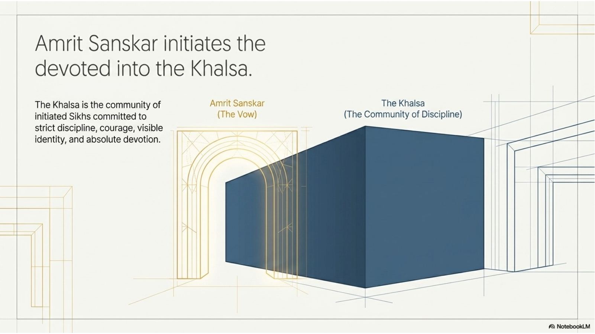
The Khalsa is the community of initiated Sikhs who commit themselves to disciplined Sikh life. It is closely linked with Guru Gobind Singh, the tenth Sikh Guru, and the Vaisakhi of 1699. The Khalsa emphasizes courage, devotion to God, equality, moral discipline, visible identity, and responsibility to defend justice.
Amrit Sanskar is the Sikh initiation ceremony into the Khalsa. Through this ceremony, a Sikh formally accepts the responsibilities of initiated life. These responsibilities include commitment to Sikh teaching, ethical conduct, community loyalty, and the visible articles of faith known as the Five Ks.
Not every Sikh is initiated into the Khalsa, so it is important not to assume that all Sikhs practise in exactly the same way. However, the Khalsa remains a powerful symbol of Sikh identity because it expresses the idea that faith should be courageous, disciplined, visible, and responsible.
10. The Five Ks and Visible Commitment
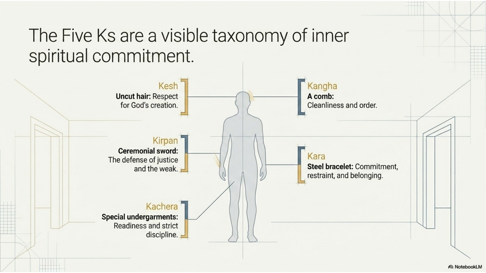
The Five Ks are five articles of faith traditionally worn by initiated Sikhs. They are Kesh, Kangha, Kara, Kirpan, and Kachera. They are not random pieces of clothing or decoration. They are outward signs that connect the person to Sikh discipline, identity, devotion, and responsibility.
Kesh means uncut hair and can represent respect for God’s creation and Sikh identity. Kangha is a comb and is connected with cleanliness and order. Kara is a steel bracelet that can represent restraint, commitment, and belonging. Kirpan is a ceremonial sword or article of faith linked with courage and the duty to defend justice and the vulnerable. Kachera are special shorts or undergarments connected with discipline and readiness.
The Five Ks can be misunderstood when people see only the external object and ignore the spiritual meaning. A respectful interpretation asks what values the article communicates. The point is not appearance for its own sake, but a visible reminder of inner commitments.
11. Kirtan and Shared Worship
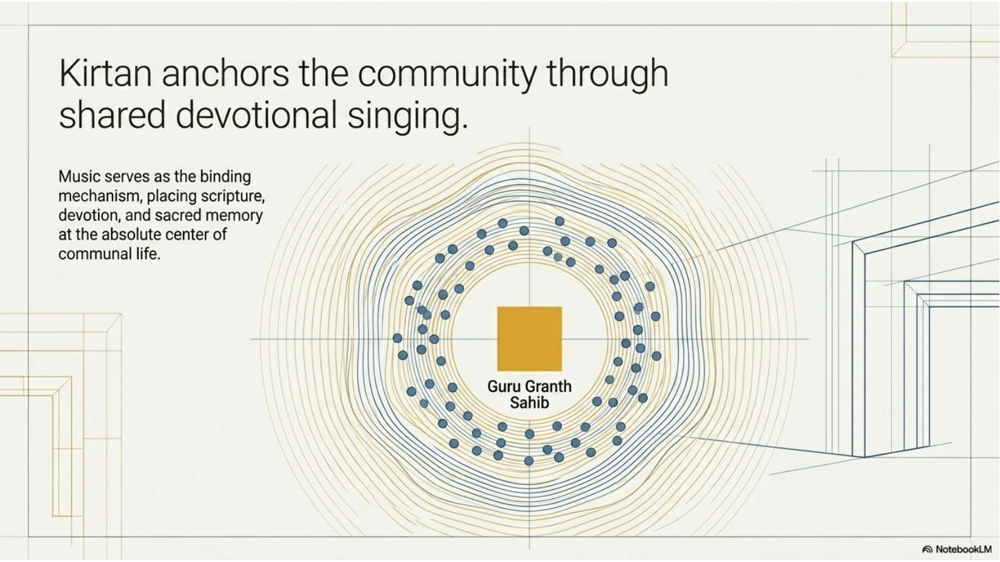
Kirtan refers to devotional singing, especially the singing of hymns from the Guru Granth Sahib. In Sikh worship, sacred words are not only read silently or studied intellectually. They are sung, heard, remembered, and shared by the gathered community.
Kirtan matters because it connects emotion, scripture, music, and community. When the sangat gathers to hear and sing sacred hymns, worship becomes collective. People are reminded that faith is not only an individual possession but also a shared rhythm of memory and devotion.
Because the Guru Granth Sahib is central to Sikh worship, kirtan helps keep the sacred text at the heart of community life. It teaches, comforts, focuses attention on God, and builds connection among worshippers.
12. Vaisakhi: Harvest, History, and Identity
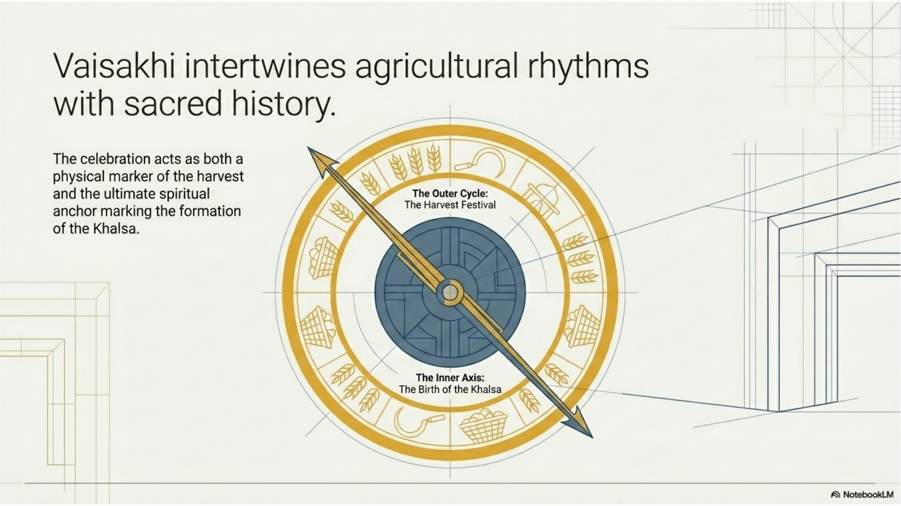
Vaisakhi has agricultural and religious significance. It is connected with the spring harvest in Punjab, but in Sikh tradition it is also deeply associated with the formation of the Khalsa by Guru Gobind Singh in 1699. This gives Vaisakhi both cultural and sacred importance.
For Sikhs, Vaisakhi is a time of memory, celebration, worship, community gathering, and public identity. Gurdwaras may hold services, kirtan, processions, langar, and community events. The festival helps people remember the courage, discipline, and responsibility associated with the Khalsa.
Vaisakhi also shows how religious traditions can connect ordinary life and sacred history. The rhythm of harvest, gratitude, community, and identity comes together in one observance.
13. Sikh Identity and Canadian Religious Pluralism
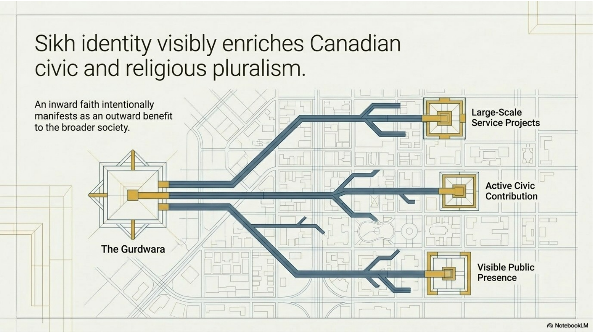
Sikh identity has become an important part of Canadian religious diversity. Gurdwaras, langar programs, public service projects, Sikh schools and organizations, visible articles of faith, and participation in civic life all show that Sikhism is not only present in Canada but actively contributes to Canadian society.
The visible nature of Sikh identity has also made Sikh communities important in conversations about pluralism. Pluralism means more than quietly tolerating difference. It means building a society where different religious communities can participate openly, contribute publicly, and be understood accurately.
Sikh communities have contributed through food programs, disaster relief, neighbourhood service, public education, interfaith work, and advocacy for religious accommodation. These contributions are connected to Sikh values such as seva, equality, courage, and responsibility to the wider community.
14. Outward Signs and Inward Commitments
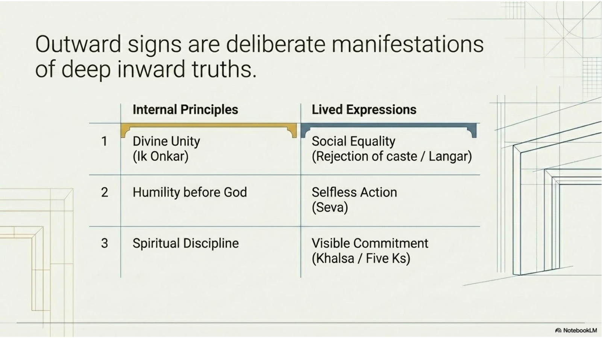
A major mistake in studying Sikhism is to focus only on outward signs without asking what they mean. The Five Ks, the gurdwara, langar, kirtan, and visible Sikh identity all point toward inner principles. They are connected to belief, discipline, service, equality, and devotion.
The pattern is consistent: divine unity leads to social equality; humility before God leads to selfless action; spiritual discipline leads to visible commitment. In Sikhism, belief should create habits, practices, and public responsibilities. The external sign matters because it carries inward meaning.
This is also the key to correcting misunderstandings. A turban, kirpan, kara, langar meal, or gurdwara should not be reduced to appearance, culture, or stereotype. Each one should be interpreted through Sikh values and the wider structure of Sikh life.
15. Researching Sikhism Respectfully
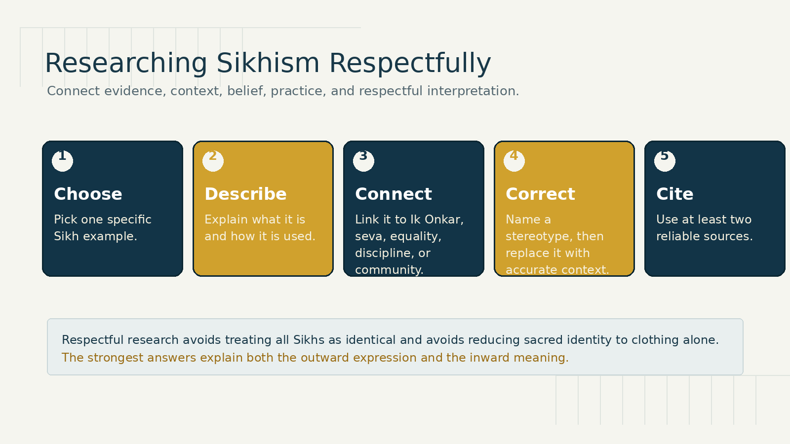
When researching a Sikh symbol, article of faith, community practice, gurdwara, service project, historical event, or Canadian organization, begin with accurate description. Identify the specific example, where it is found, who participates in it, and what role it plays in Sikh life. Avoid vague claims such as “all Sikhs do this the same way” unless your source clearly supports that statement.
The next step is interpretation. Explain which Sikh beliefs or values are visible in the example. Strong connections include Ik Onkar, equality, seva, langar, humility, discipline, courage, community, devotion to God, and respect for the Guru Granth Sahib. A good answer does not merely describe what something looks like. It explains what it communicates.
Finally, correct one misunderstanding. For example, someone may misunderstand the kirpan as merely a weapon, reduce the turban to fashion, think langar is only charity, or assume all Sikhs practise identically. Correct the misunderstanding by using accurate context and respectful language. Use at least two credible sources, such as a gurdwara website, Sikh organization, museum, academic source, encyclopedia, or reputable news/reporting source.
Chapter 9 Glossary
| Term | Meaning |
|---|---|
| Amrit Sanskar | The Sikh initiation ceremony into the Khalsa. |
| Caste | A hereditary social hierarchy that Sikh teaching rejects as a basis for spiritual worth. |
| Five Ks | Five Sikh articles of faith: Kesh, Kangha, Kara, Kirpan, and Kachera. |
| Gurdwara | A Sikh place of worship and community gathering. |
| Guru | A spiritual teacher or guide. |
| Guru Granth Sahib | The sacred scripture and living Guru in Sikh tradition. |
| Guru Gobind Singh | The tenth Sikh Guru, associated with the formation of the Khalsa. |
| Guru Nanak | The founder of Sikhism and the first Sikh Guru. |
| Ik Onkar | A Sikh statement of belief in one God or one divine reality. |
| Kachera | Special shorts or undergarments connected with discipline and readiness. |
| Kangha | A comb connected with cleanliness and order. |
| Kara | A steel bracelet connected with commitment, restraint, and belonging. |
| Kesh | Uncut hair, an article of faith connected with respect for God’s creation and Sikh identity. |
| Khalsa | The initiated Sikh community committed to discipline, courage, visible identity, and devotion. |
| Kirtan | Devotional singing, especially hymns from the Guru Granth Sahib. |
| Kirpan | A ceremonial sword or article of faith connected with justice and protection of the vulnerable. |
| Langar | A free shared meal open to all, expressing equality and community. |
| Monotheism | Belief in one God. |
| Mul Mantar | An opening Sikh statement of belief that begins with Ik Onkar. |
| Pluralism | A society where different religious communities can participate openly and respectfully. |
| Punjab | The region of South Asia where Sikhism began. |
| Sangat | The Sikh congregation or gathered community. |
| Seva | Selfless service. |
| Sikh | A follower of Sikhism. |
| Sikhism / Sikhi | A monotheistic tradition from Punjab centred on devotion to one God, equality, service, and disciplined living. |
| Vaisakhi | A major Sikh observance connected with harvest and the formation of the Khalsa. |